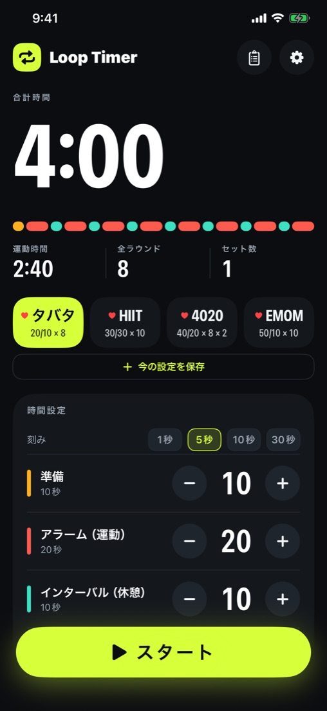
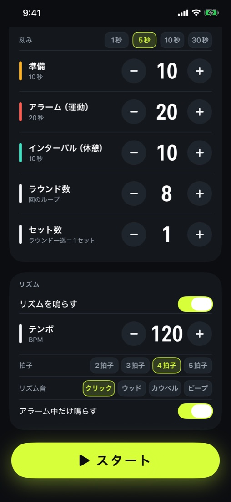
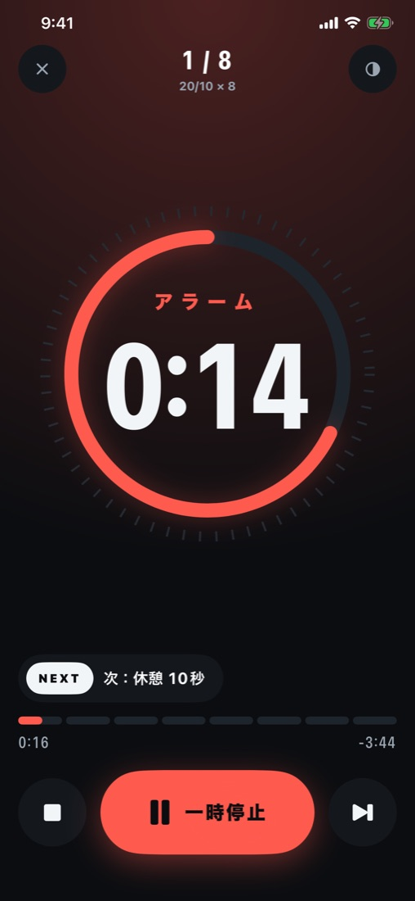
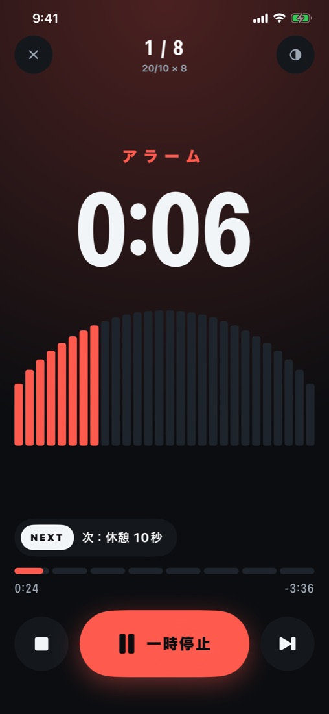
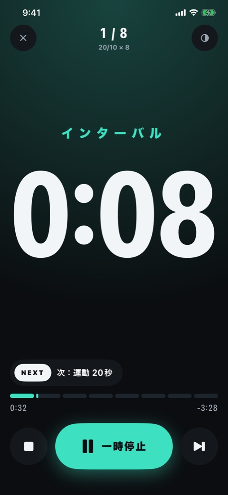
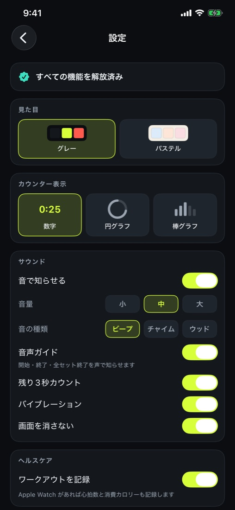
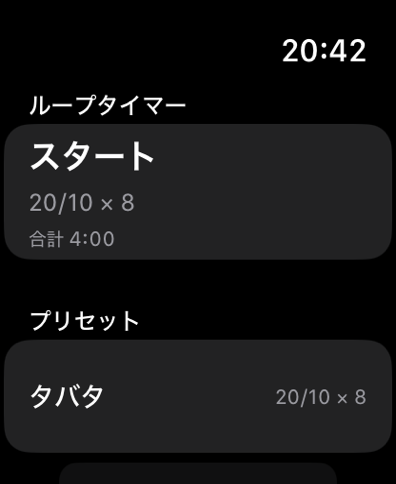
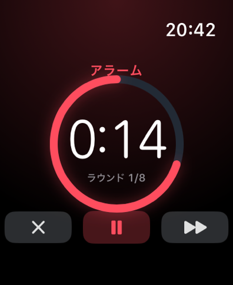

画面
準備はオレンジ、運動は赤、休憩は緑。色でいまのフェーズが一目で分かります。






主な特長
トレーニング中に必要なことだけを、大きく、分かりやすく。
ダイナミックアイランド
他のアプリを使っていても残り時間とフェーズが見えます。ロック画面にも表示。
画面を消しても止まらない
区切りは音とバイブでお知らせ。開始・終了は声でも知らせます。
3種類の表示
数字・円グラフ・棒グラフ。実行中でもボタンひとつで切り替え。
リズムに合わせて
BPM 40〜240 と拍子を選んで、動きのペースをそろえられます。
ヘルスケアに記録
HIIT のワークアウトとして記録。アプリ内で履歴を確認できます。
すぐ使えるプリセット
タバタ、HIIT、4020、EMOM。1秒刻みで自分用にも。
Apple Watch


iPhone を置いたまま、手首から開始・一時停止・スキップ。区切りは手首の振動で伝わります。iPhone と同じ残り時間を表示し、運動中の心拍数も見られます。
無料版と有料版
無料
¥0
- 4つのプリセットをすべて実行
- 表示の切り替え・ダイナミックアイランド
- トップ画面に広告が表示されます
すべての機能を解放
買い切り（サブスクリプションなし）
- 時間の変更・自分の設定の保存
- 音の設定・音声ガイド・リズム
- Apple Watch アプリとヘルスケアへの記録
- 広告なし
このアプリは運動の時間を計るためのものです。表示される心拍数などの情報は、医師による診断・治療の代わりにはなりません。
Loop Timer - HIIT
A simple interval timer that loops work and rest — for Tabata, HIIT, circuits and gym sets.
Dynamic Island
See the remaining time while using other apps, and on the Lock Screen.
Keeps running
Sound, haptics and voice cues keep going with the screen locked.
Apple Watch & Health
Control from your wrist with live heart rate; sessions are saved as HIIT workouts.
The free version runs all four presets and shows a banner ad on the main screen. A one-time purchase (no subscription) unlocks every feature and removes ads.
This app times your workouts. Heart rate and other information it shows are not a substitute for medical diagnosis or treatment.